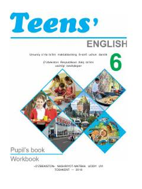

IT6-sinf o‘quvchilari uchun mo‘ljallangan ingliz tili fani darsligi.
Mazkur darslik umumiy o‘rta ta’lim maktablarining 6-sinf o‘quvchilari uchun mo‘ljallangan bo‘lib, ingliz tilini boshlang‘ich va o‘rta bosqichda o‘rganishga xizmat qiladi. Kitobda turli mavzulardagi qiziqarli matnlar, muloqot uchun dialoglar, lug‘at boyligini oshiruvchi hamda grammatik qoidalarni mustahkamlovchi topshiriqlar berilgan.